M&A Activity in Canada
How many deals are we talking about, and how do we identify which firms and workers to study?
Canada sees around 750 merger and acquisition deals per year among the firms in our data. Think of these as moments when one company buys or absorbs another. We follow these deals from 2005 to 2017.
To figure out whether M&As actually cause changes (rather than just happening at companies that were already changing), we find a "twin" for each M&A firm — a similar company that never went through a deal. Comparing the two tells us what the deal itself did.
Our sample covers M&A events from the SDC Platinum database matched to the Canadian Employer-Employee Dynamics Database (CEEDD), which links corporate T2 tax records to individual T1 and T4 filings. The match rate is ~75%, yielding ~420 matched deals per year from a pool of ~750 eligible events.
We implement a matched difference-in-differences design. Control firms are selected via propensity score matching on total revenue, average payrolls, and firm age, exactly within 2-digit NAICS sector, province, and year. ~80% of events are acquisitions (target continues as a separate entity); the remainder are mergers (full integration). We analyze targets and acquirers separately for acquisitions and aggregate for mergers.
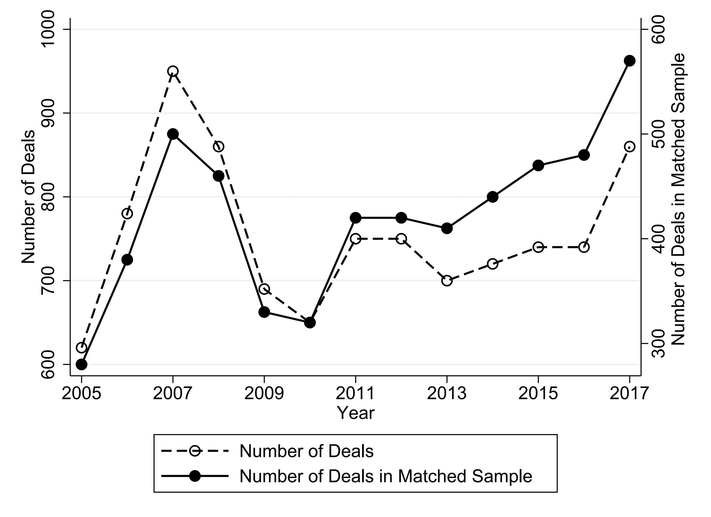
What Happens to Firms After M&As?
Acquirers grow, targets shrink — but both become less profitable. There's no evidence that M&As create efficiency gains.
When a company acquires another, the buyer (acquirer) grows — it gains employees and operations. The company being bought (target) shrinks: it loses workers and its average pay falls.
But here's the surprising part: both companies become less profitable after the deal. The efficiency gains that M&As are often supposed to deliver don't show up in the data. If anything, deals seem to destroy value in the short-to-medium run.
Event-study estimates from equation (1) — a matched DiD with firm and year fixed effects, 4-digit NAICS × year controls, and a quartic in firm age — show parallel pre-trends for both targets and acquirers, supporting the design.
Post-event: target employment falls 8.9 log points, average payrolls fall 2.6 log points. Acquirer employment rises 18.8 log points with no payroll change. At the aggregate level (targets + acquirers pooled), employment and payrolls are roughly flat — the deal reshuffles, it doesn't create. Profit margins fall 0.7 pp for targets, 1.9 pp for acquirers; return on assets falls 3.3 pp and 1.3 pp respectively. These profitability declines are inconsistent with an efficiency or market-power channel.
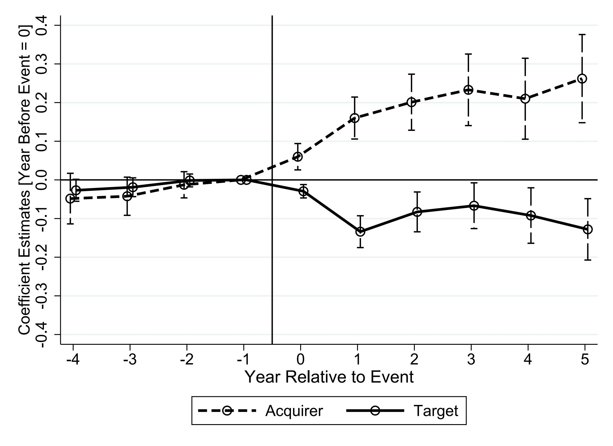
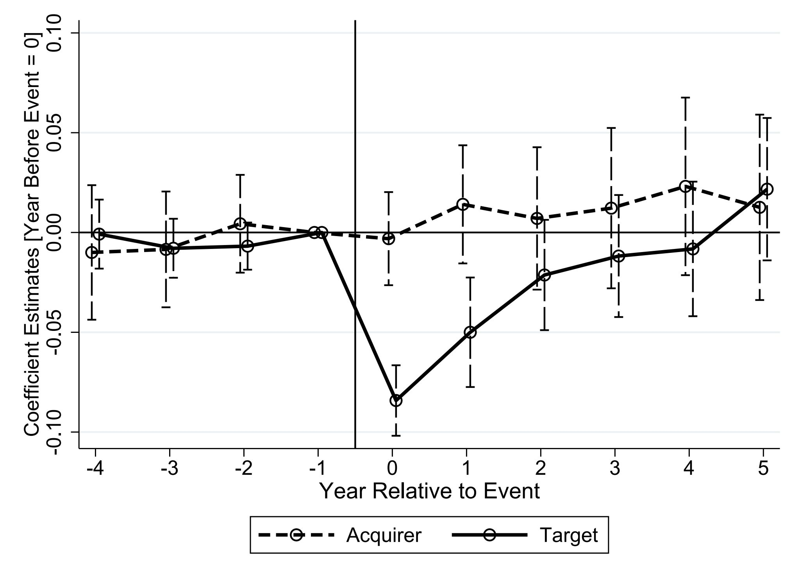
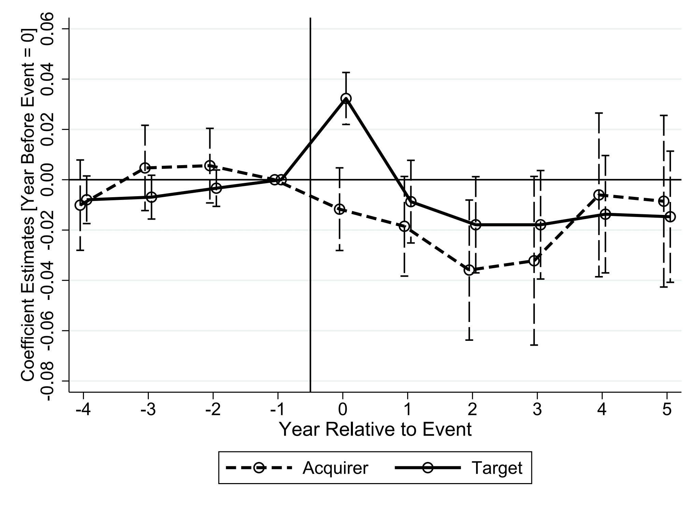
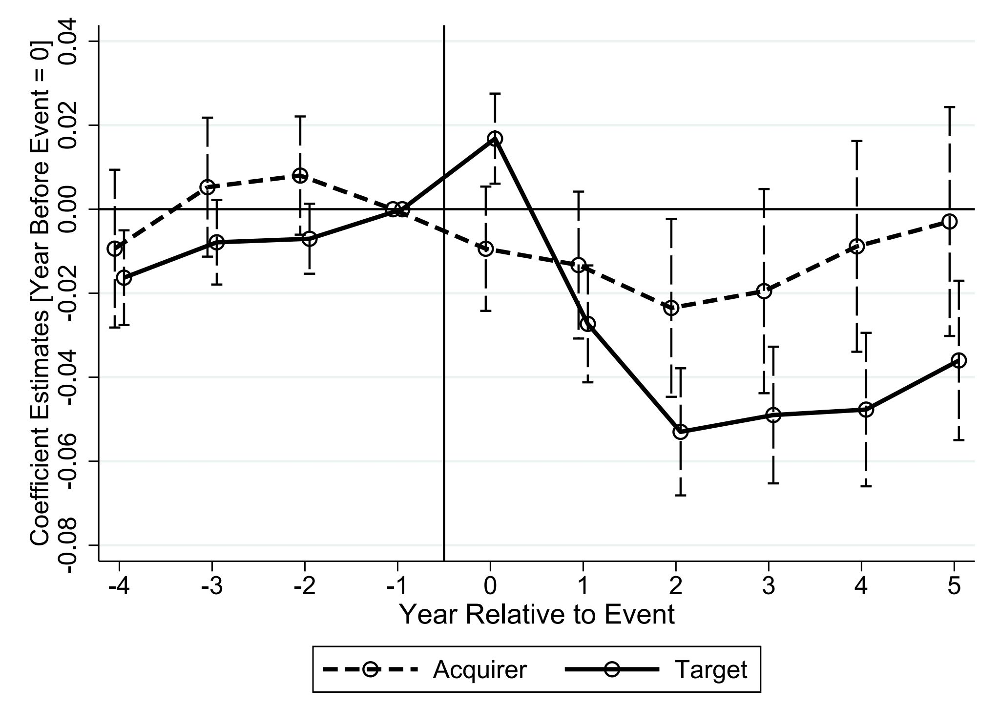
Worker Earnings After M&As
Target workers earn less after M&As. Acquirer workers are unaffected. The drop is driven almost entirely by those who change jobs.
We track individual workers — people who had been at their firm for at least 4 years before the deal — and follow their paychecks for years afterward.
Workers at the company being bought (target) see their annual earnings fall by about 1.2% on average. Workers at the buying company are essentially unaffected. The story for target workers gets more interesting when we split them: those who stay at the target firm see barely any change, but those who leave lose about 3.3%.
Worker-level DiD from equation (2) with worker and year fixed effects, standard errors two-way clustered at the worker × firm level. We track incumbent workers continuously employed at the matched firm for the full 4-year pre-event window. This tenure restriction closely parallels Jacobson et al. (1993).
Target workers: −1.2 log points in annual earnings (p<0.05). Acquirer workers: +0.4 log points (insignificant). Decomposing by job status: stayers at target firms show an insignificant −0.8 log points; movers from target firms show −3.3 log points (p<0.001). Job transition probability spikes 20 pp in the M&A year for target workers; acquirer workers show no change.
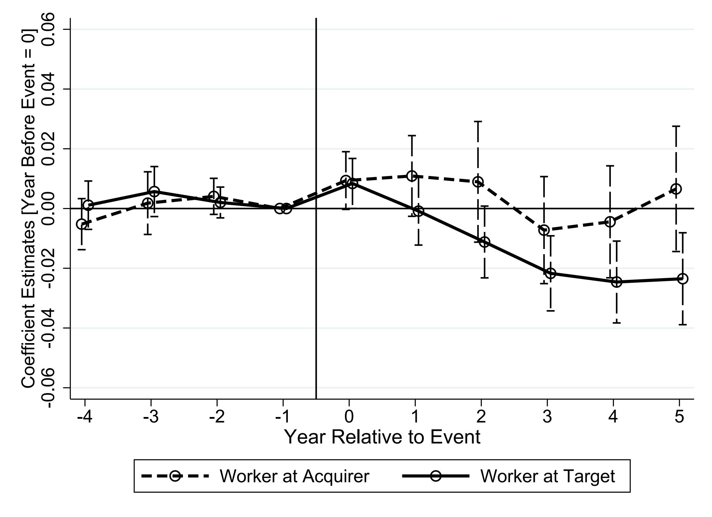
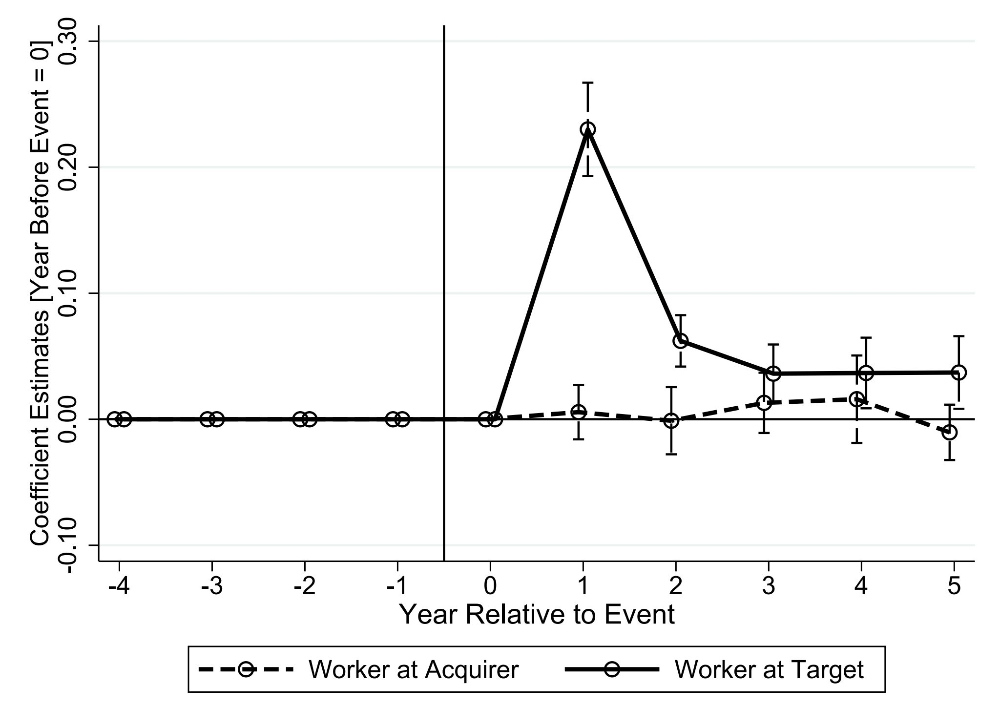
Who Leaves — and What Happens to Them?
Target workers are far more likely to change jobs after an M&A. Most move to other companies (not unemployment) — and most go to firms outside the acquiring company.
In the year of the deal, target workers are 70% more likely to switch jobs than similar workers who never experienced an M&A. Most of them don't end up unemployed — they land at other companies. But here's the twist: most don't go to the acquiring firm either. About 80% move to completely unrelated companies.
Workers who move to the acquiring firm see smaller earnings losses. Those who move to unrelated companies lose more. And workers who switch to a completely different industry — about a quarter of movers — suffer the largest, most persistent losses.
We define job movers as workers who transition within the first two years post-event (t=0 or t=1). The movers sample is defined ex ante by treatment status — control workers may also move, but empirically most do not. This parallels the displacement literature (Jacobson et al. 1993; Lachowska et al. 2022).
Movers experience −3.3 log points overall (Table 4, col. 1). By destination: movers to acquirers show −1.6 log points (insignificant); movers to non-acquiring firms show −5.0 log points (p<0.001). ~80% of movers go to non-acquirers. Workers transitioning to a different industry show an additional 5.4 pp higher transition probability. The losses for movers are significantly smaller than mass-layoff literature benchmarks, consistent with a different macro context (M&As are pro-cyclical).
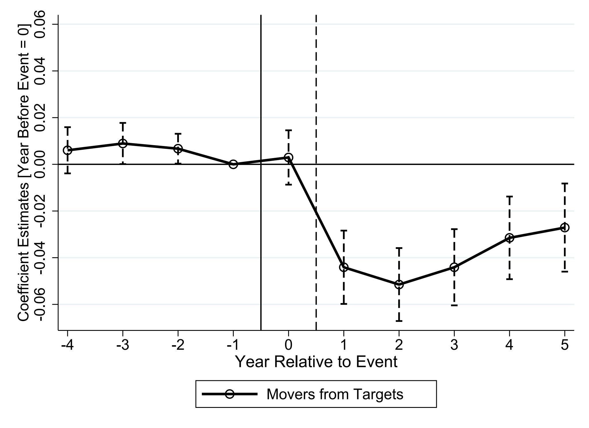
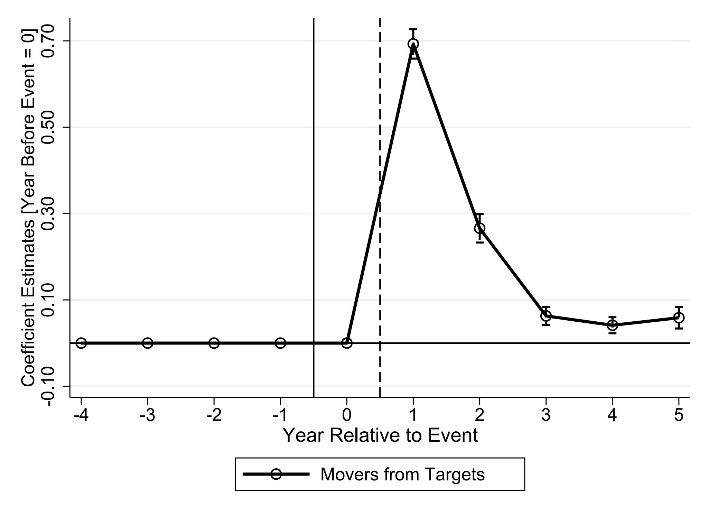
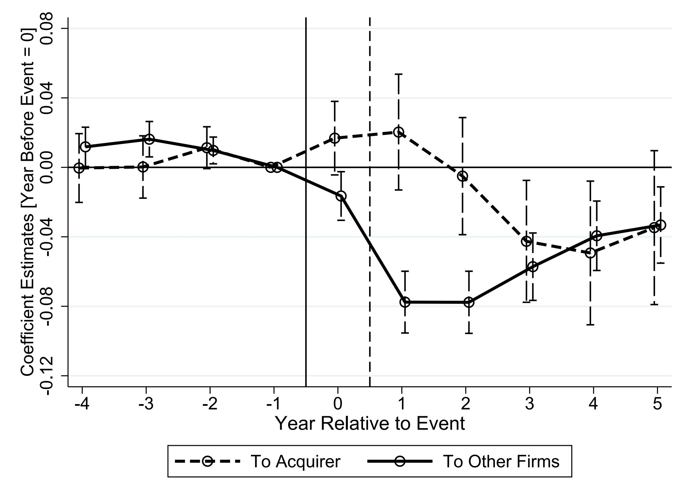
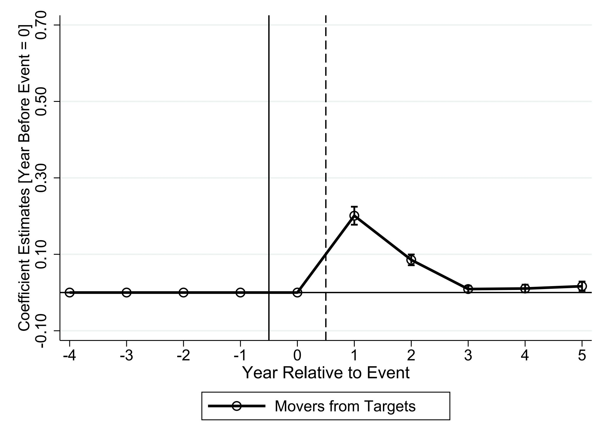
Where Do Workers Go — and Why Do They Still Earn Less?
Workers who leave target firms move to bigger, more profitable companies with higher wage premiums. Yet they still earn less. The culprit: losing a valuable match with their old employer.
You'd expect workers who move to better companies to earn more. But that's not what happens. Workers leaving target firms land at firms that are larger, more profitable, and pay higher wages on average — and still end up earning less.
The explanation is a concept called a match premium: some workers and firms are simply a great fit for each other, and that fit itself has economic value. When an M&A forces a worker out, they lose that fit. Even a "better" company on paper can't fully replace what they had with their old employer.
We estimate AKM firm fixed effects (Abowd, Kramarz, Margolis 1999) and match effects following Woodcock (2015) / Lachowska et al. (2022). Employer fixed effects rise 3.2 log points post-move (Table 5, col. 1) — confirming movers go to higher-wage firms. But match effects fall 9.0 log points (col. 2), more than offsetting the firm-premium gain. Observable firm characteristics corroborate: movers' new employers have 49.9 log points higher revenue and 1.8 pp higher profit margins on average.
These results suggest AKM-type wage decompositions understate worker-specific match value, consistent with Borovičková and Shimer (2024)'s critique that exogenous mobility tests may be underpowered when match effects are important to mobility decisions.
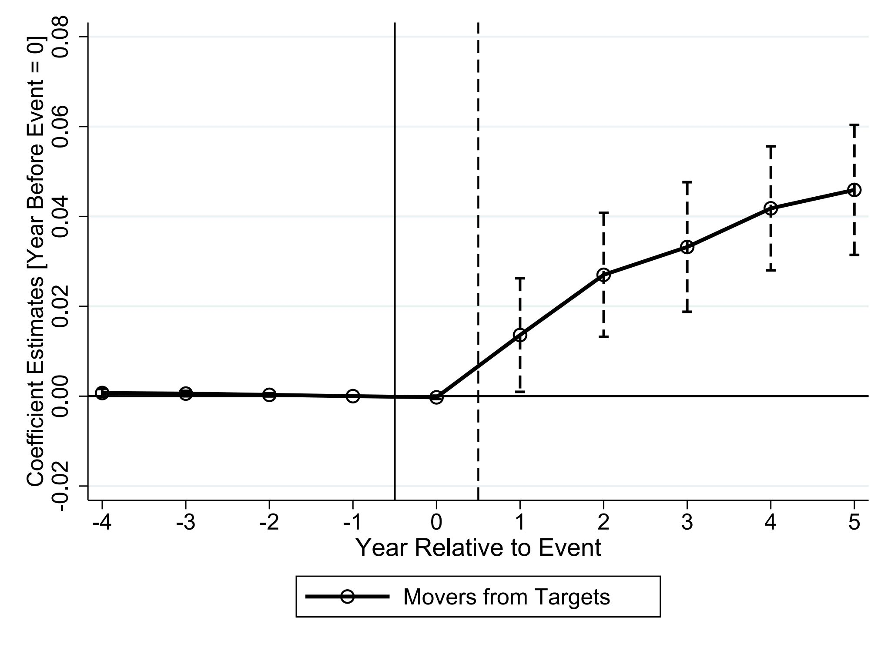
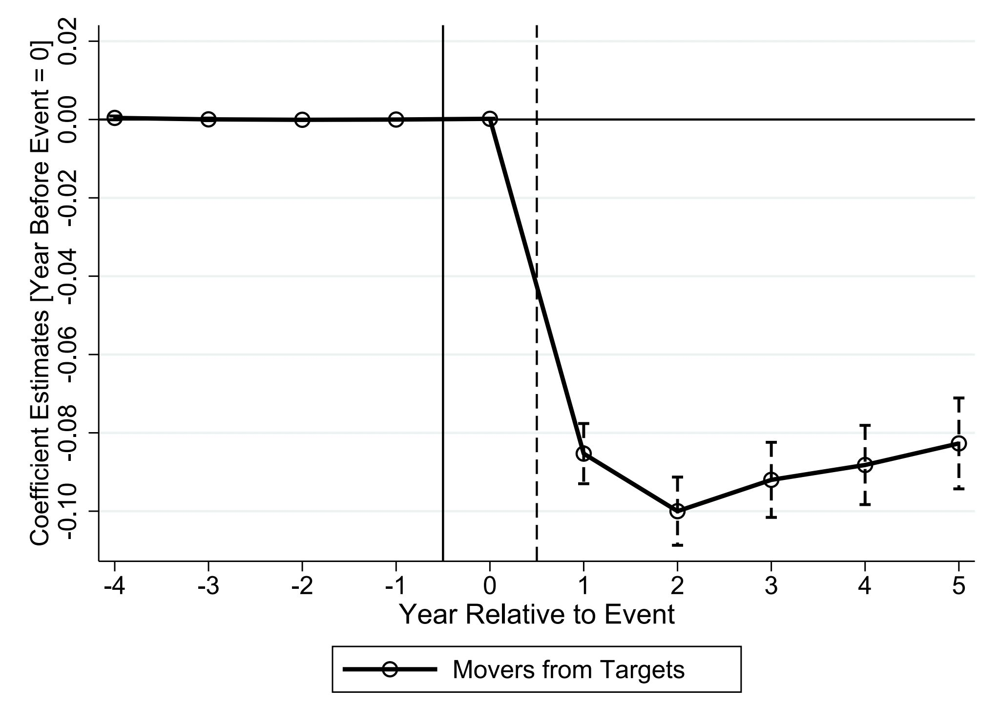
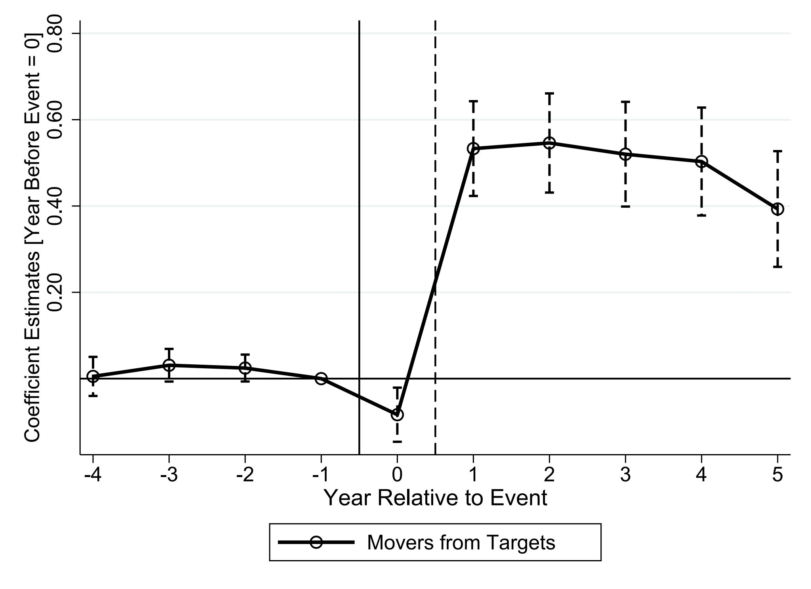
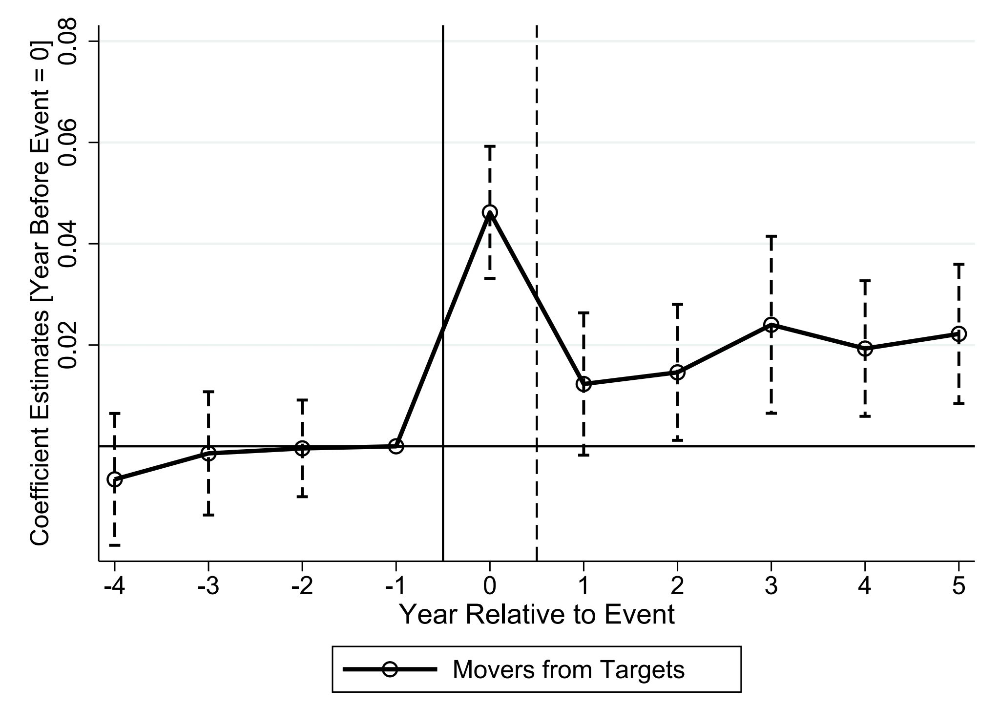
Who Gets Hit Hardest?
Long-tenured workers and high earners bear the brunt. Short-tenure workers recover quickly. This pattern is the key to understanding why M&As hurt some workers but not others.
Not all workers are equally hurt. Employees with 7 or more years at the company before the deal suffer earnings losses that are 4.5% larger than employees with just 4 years. The long-tenured group never fully recovers over our observation window.
Similarly, workers in the top earnings quintile at their firm lose 4.6% more than those in the bottom quintile. In other words: the longer and better an employment relationship, the more valuable it is — and the more painful it is to lose.
Triple-difference estimates from Table 6. Base group: movers with 4 years of tenure (minimum required for the sample). Interaction: Post × Treated × (7+ years tenure) = −4.5 log points (p<0.001). Job transition rates are statistically indistinguishable across tenure groups, ruling out differential selection into moving as the mechanism.
Earnings quintile heterogeneity: Post × Treated × Q5 = −4.6 log points (p<0.05) relative to Q1. Sector heterogeneity shows similar patterns across tradable and non-tradable sectors, further downweighting a product-market-power channel. Age heterogeneity shows the largest declines for workers 50+, consistent with the tenure pattern.
This heterogeneity is consistent with two broad model classes: (1) implicit contract models (Lazear 1979, Burdett & Coles 2003) where tenure-increasing wage profiles are breached by new management, and (2) firm-specific human capital / directed search models (Lazear 2009, Menzio & Shi 2011) where long matches reflect productive complementarities that are destroyed by the M&A.
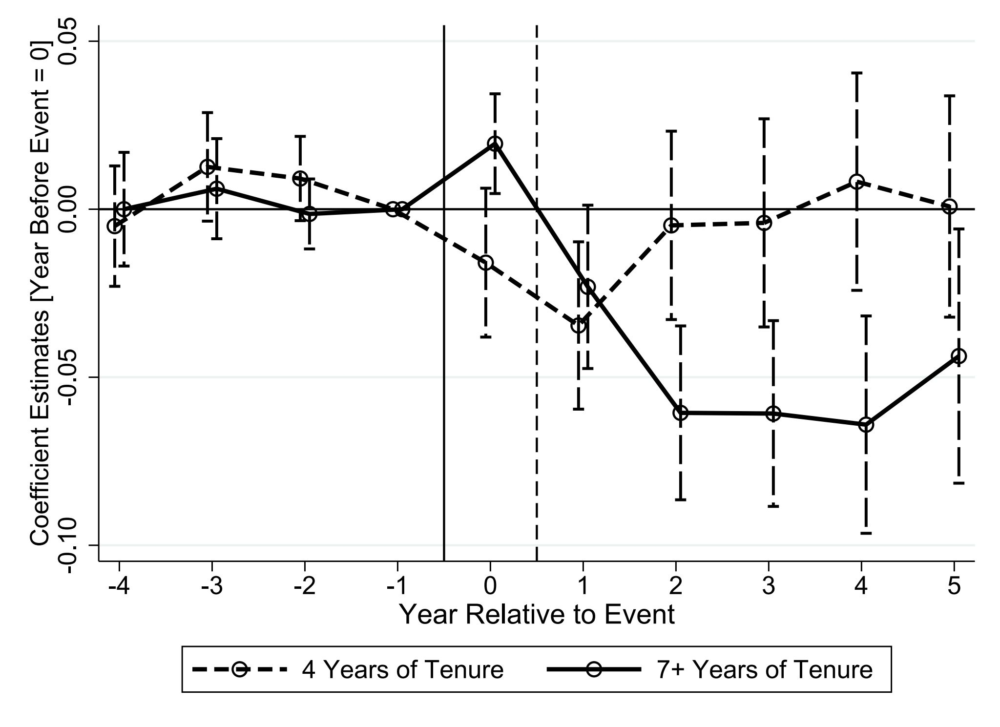
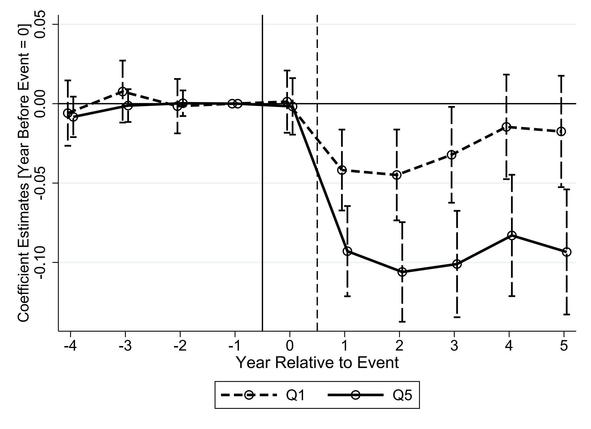